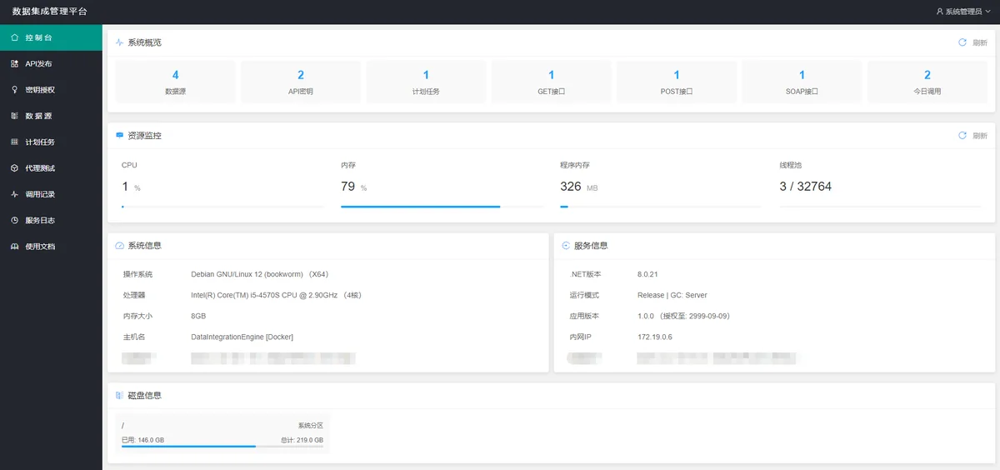
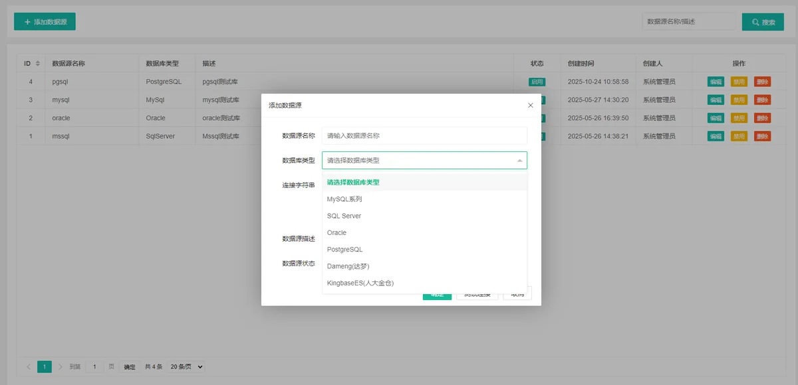
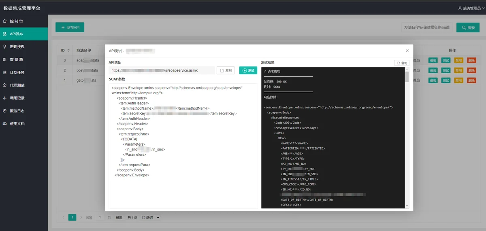
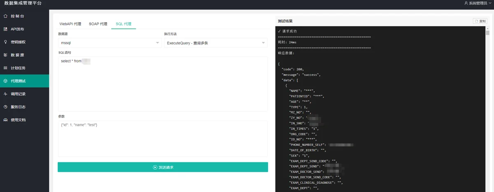

产品概述
本产品是一个基于数据库集成的轻量级 Web API 服务平台，帮助团队在少代码甚至无代码场景下，快速实现数据库与各类系统接口集成。
核心能力
- SQL 代理执行引擎：安全代理执行 SQL 增删改查并返回标准结构数据
- WebService 代理服务：代理调用 SOAP WebService 并返回标准结构数据
- WebAPI 代理服务：代理调用 REST API 并返回标准结构数据
- API 接口发布服务：支持 GET / POST / SOAP 三种方式发布接口
- 增量数据采集服务：支持按计划任务从 WebAPI 或数据库增量采集入库
使用场景
- 扩展 MSSQL 直接调用异构数据库能力（SQL Server、MySQL、Oracle、PostgreSQL、国产数据库等）
- 扩展 MSSQL 调用 WebService / WebAPI 的能力，支持接口数据拉取与回写
- 扩展数据库发布 Web 接口能力，将存储过程发布为 GET / POST / SOAP API
- 实现从 WebAPI 或数据库按周期增量采集数据并自动更新本地库
- 面向会数据库但不想写大量代码的团队，快速完成系统间数据集成
CLR 组件支持
可配合 MSSQL 使用配套 CLR 组件（SqlEngineIntegration），提供丰富的自定义函数与存储过程，便于在 SQL Server 内直接完成跨库、跨接口集成能力扩展。
部分功能预览




| 适用对象 | 需要快速打通异构系统与数据库的集成团队 |
|---|
| 推荐场景 | 数据库互通、接口发布、增量采集、跨系统同步 |
|---|